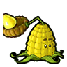
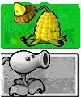
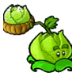

逻辑：大嘴花咬得凶但太脆，高坚果扛得住却没牙口。把巨口嫁接到厚甲上——先挨啃，再一口吞。
效果：耐久 8000（高坚果级）；保留吞噬；咀嚼 42s → 30s
translate(-50%,-50%) 居中），只是整体放大 1.9 倍方便看。 大嘴花
大嘴花 高坚果
高坚果逻辑：大嘴花咬得凶但太脆，高坚果扛得住却没牙口。把巨口嫁接到厚甲上——先挨啃，再一口吞。
效果：耐久 8000（高坚果级）；保留吞噬；咀嚼 42s → 30s
大嘴花 火炬树桩
火炬树桩逻辑：嘴里燃着火桩——吞下去的僵尸当场被焚化，不用慢慢消化。
效果：咀嚼 42s → 6s；每次吞噬对同一行造成一次火焰灼烧
大嘴花 大蒜
大蒜逻辑：一口吞下一整头蒜，口气冲得整行僵尸都退避三舍。
效果：每次吞噬后，同行僵尸被推退约半格并减速 1.5s
火炬树桩 地刺
地刺逻辑：地刺扎穿脚掌，火桩的余火顺着伤口把僵尸点着——踩上来就得一直烧。
效果：地刺伤害照旧，另附加持续灼烧（每 1.5s 5 点，共 4.5s）
火炬树桩 土豆雷
土豆雷逻辑：土豆雷引爆时把火桩的余烬炸成一片火海，炸过的那块地还在烧。
效果：爆炸伤害照旧，并在 3×3 范围留下 6s 火场（每 1.5s 8 点）
大蒜 坚果墙
坚果墙逻辑：坚果墙上涂满蒜味——僵尸啃一口就被熏得改道，墙自然更耐啃。
效果：耐久 4000 不变；每次被啃食有 35% 概率令该僵尸改行
translate(-50%,-50%) 基准，而代码又直接覆写 transform —— 整块部件于是相对植物中心偏右半个宽、偏下半个高，看起来就"被扔到右下角"。




rgb(74,57,13)。
width/height 改，不碰 transform，以免顶掉 .entity 的居中基准。| 植物 | 旧价 | 新价 | 为什么值这个价 |
|---|---|---|---|
| 卷心菜投手 | 100 | 150 | 抛射物可破甲：越过路障/铁桶/报纸/铁门直接打僵尸本体，护甲不脱落 |
| 玉米投手 | 100 | 175 | 破甲之外，另有 20% 概率投出黄油，命中定身 3 秒 |